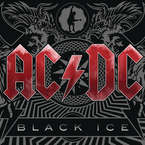
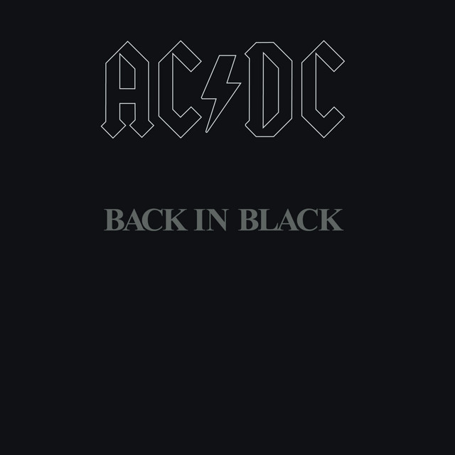
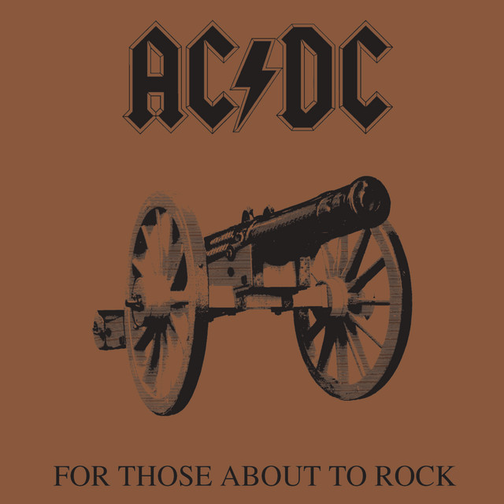
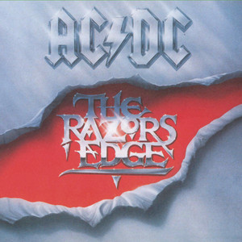
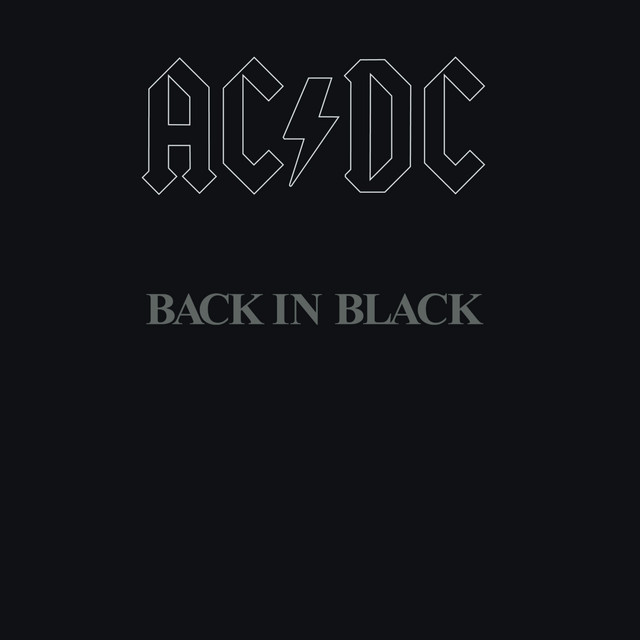
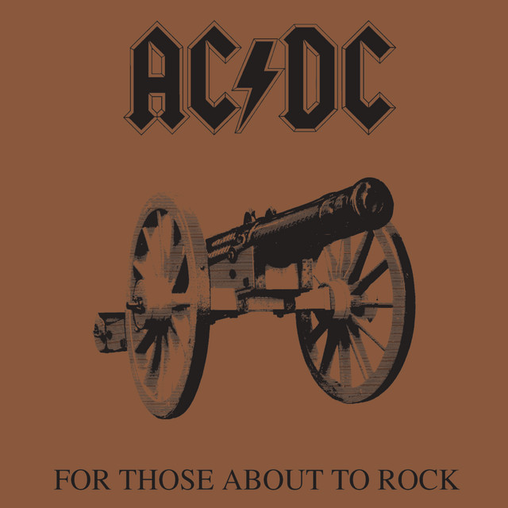
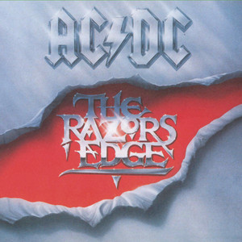

Historia

AC/DC es una banda australiana de hard rock formada el 1973, la musica i actuacions en viu de la qual s'han convertit en un icona cultural global.
Discografia
· Highway to Hell (1979)
· Back in Black (1980)
· For Those About to Rock We Salute You (1981)
· The Razors Edge (1990)
 





Integrants

· Angus Young - guitarra lider
· Malcolm Young - guitarra ritmica
· Phil Rudd - bateria
· Cliff Williams - baix
· Bon Scott - veu
· Brian Johnson - vez